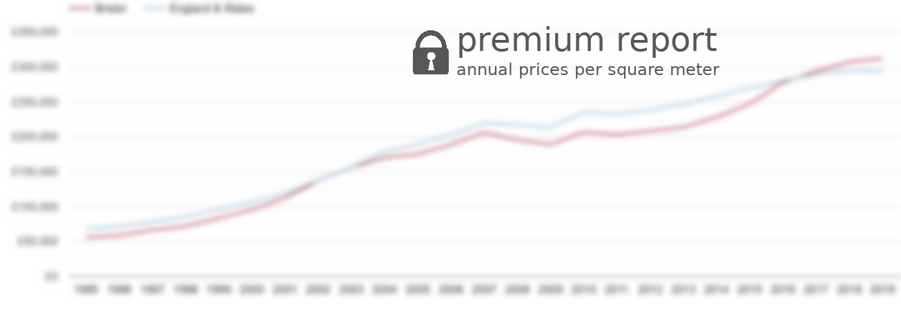

West Sussex newly built property prices
The price of a newly built property is £387k in West Sussex county. The price increased by £4.4k (1%) over the last twelve months. The price of an established property is £371k. There were 1819 sales of newly build properties. Most new properties were sold in the £300k-£400k price range with 585 (32.2%) properties sold, followed by £400k-£500k price range with 380 (20.9%) properties sold. Most new homes were sold in RH12 1, with 133 sold to date from January 2019 - December 2019.West Sussex
county
January 2019 - December 2019
£387k
average price of a new property1%
average price percentage change£4.4k
average price changeEngland + Wales
January 2019 - December 2019
£338k
avg. price of a new property-1%
average price percentage change£-3.9k
average price changeWest Sussex cost comparison of new homes and older homes
January 2019 - December 2019

£387k
A newly built property£371k
An established propertyWest Sussex sales share of new homes and older homes
January 2019 - December 2019

█ 13.5%
A newly built property1.8k
█ 86.5%
An established property11.7k
13.5k
total sales volumeWest Sussex map of sales of new properties
shows the total volume of new homes sold a given postcode sector.

West Sussex new home sales share by price range
shows a sales volume of new homes in a given price range between January 2019 - December 2019. See also West Sussex property sales reports.

| Property price range | Market share | Sales volume |
|---|
| £50k-£100k | 0.2% | 4 |
| £100k-£150k | 1.2% | 22 |
| £150k-£200k | 4.9% | 89 |
| £200k-£250k | 8.4% | 153 |
| £250k-£300k | 15.8% | 288 |
| £300k-£400k | 32.2% | 585 |
| £400k-£500k | 20.9% | 380 |
| £500k-£750k | 13.9% | 253 |
| £750k-£1M | 2.0% | 36 |
| over £1M | 0.5% | 9 |
West Sussex cost comparison of new houses and new flats
January 2019 - December 2019

£539k
Detached£265k
Flat£377k
Semi-Detached£347k
TerracedWest Sussex sales share of new houses and new flats
January 2019 - December 2019

█ 29.4%
Detached534
█ 29.3%
Flat533
█ 26.4%
Semi-Detached481
█ 14.9%
Terraced271
West Sussex real new home prices
Yearly average nominal house prices adjusted for inflation

West Sussex new home prices compared to England & Wales' new home prices
Yearly average nominal prices

compared to England & Wales' prices
Yearly average nominal prices per square meter of new homes.
West Sussex new home prices and nearby counties
Yearly average nominal prices

West Sussex house prices new vs established
Yearly average nominal prices

West Sussex annual sales of new homes and older homes
Total sales volumes by year

Other reports for West Sussex county